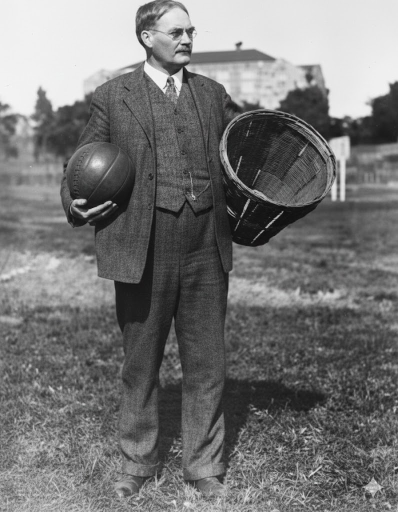
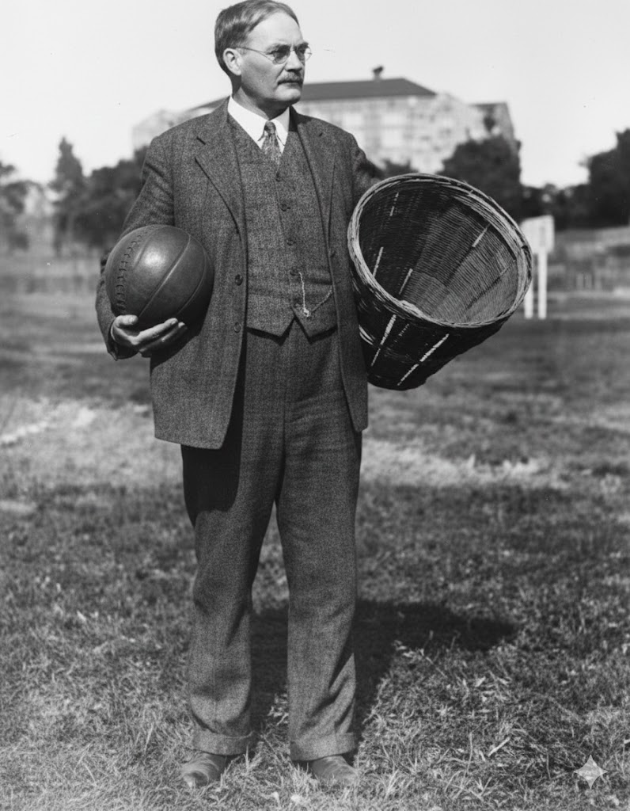
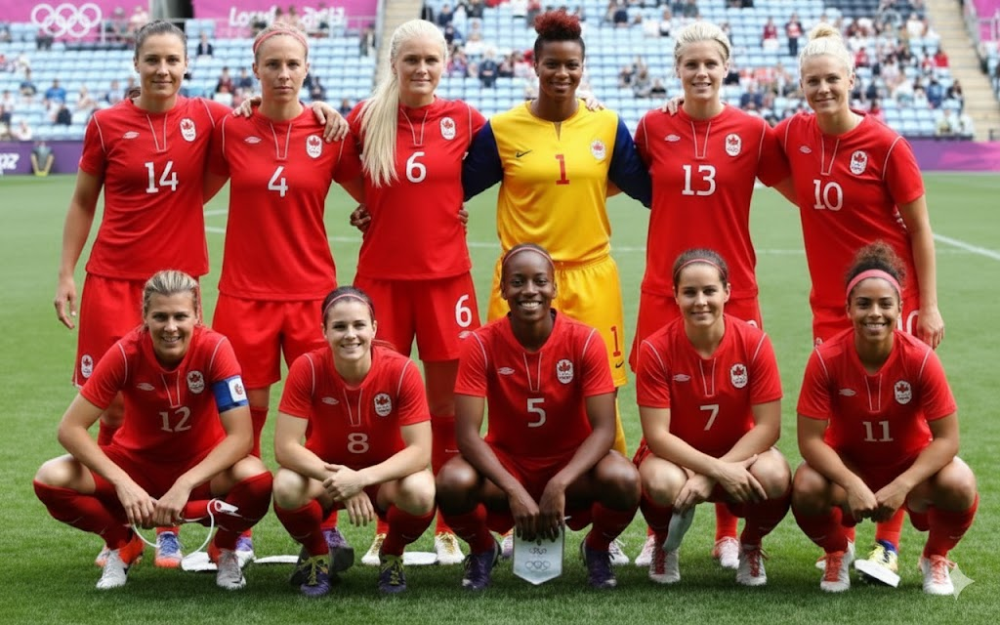
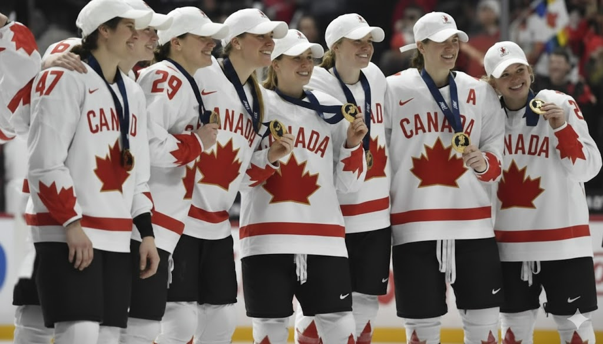
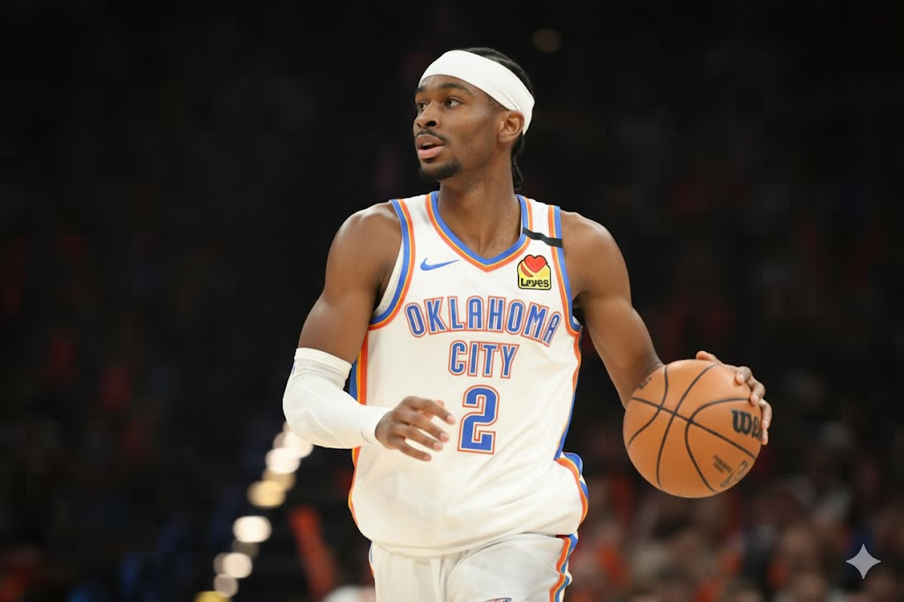
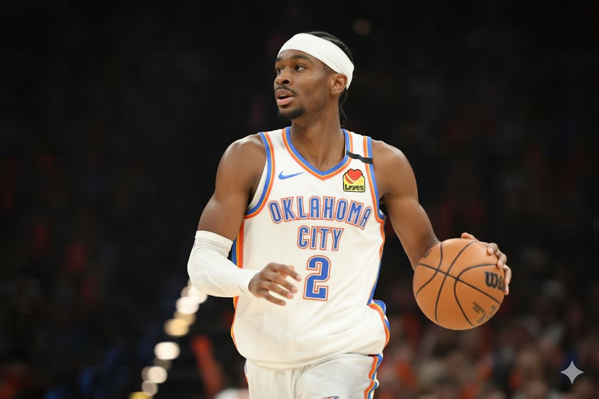
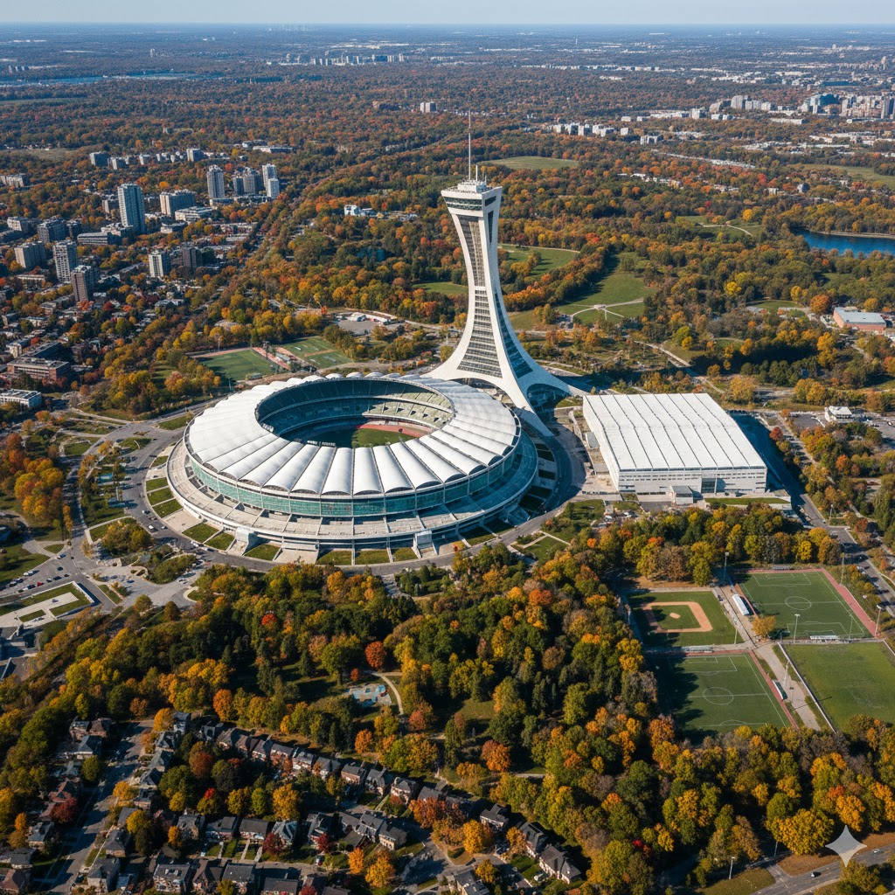
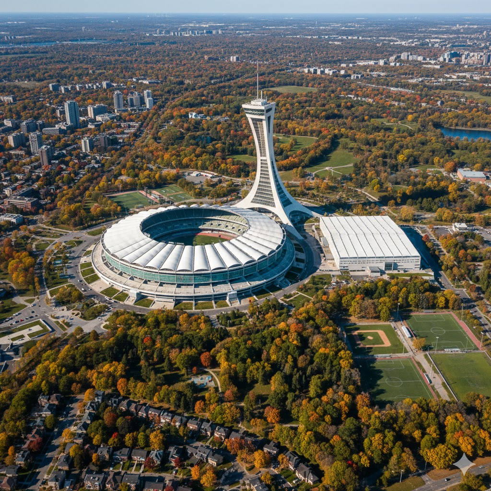
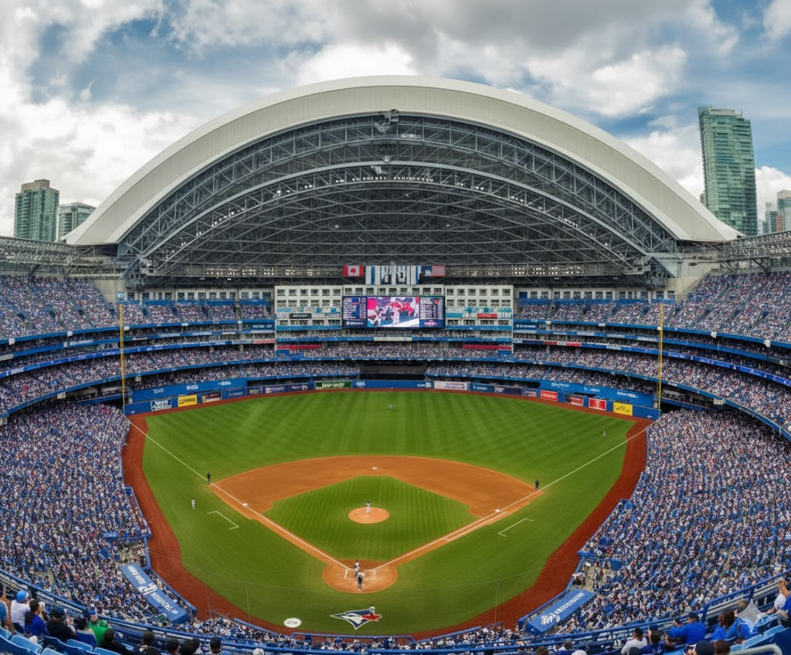
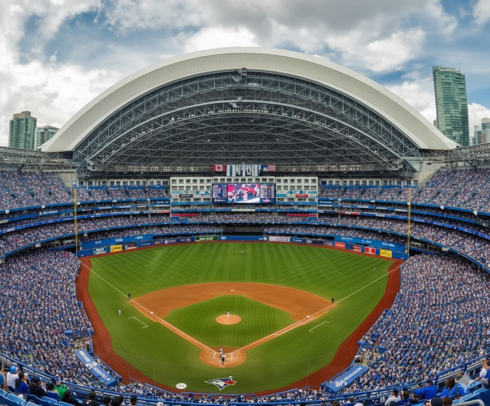

Spor
Buz Hokeyi: "Kanada'nın Yaşam Biçimi"
Buz hokeyi Kanada için bir spordan çok daha fazlasıdır; ulusal kimliğin temel taşıdır.
• Kültürel Köken: Kış aylarının çok uzun ve sert geçtiği Kanada'da, donmuş göller ve nehirler doğal oyun alanlarına dönüşmüştür. Bu durum, hokeyi her yaştan insanın ulaşabileceği "halkın sporu" haline getirmiştir.
• NHL (Ulusal Hokey Ligi) Dominasyonu: Dünyanın en prestijli hokey ligi olan NHL'deki oyuncuların yaklaşık %40'ı Kanadalıdır. Toronto Maple Leafs ve Montreal Canadiens gibi takımlar, dünyada en sadık ve geniş taraftar kitlesine sahip takımlar arasındadır.
• Eğitim Sistemiyle Bağlantı: Kanada'daki okulların çoğunda hokey takımları vardır ve yetenekli gençler için profesyonelliğe giden yol çok disiplinli bir şekilde kurgulanmıştır.
| Yıl | Olay / Dönüm Noktası | Kanada İçin Önemi |
|---|---|---|
| 1875 | İlk Kapalı Alan Maçı | Montreal'de (Victoria Skating Rink) bilinen ilk organize iç mekan hokey maçı yapıldı. |
| 1893 | Stanley Cup Bağışı | Kanada Genel Valisi Lord Stanley, ülkenin en iyi amatör takımı için meşhur gümüş kupayı bağışladı. |
| 1917 | NHL'in Kuruluşu | Montreal'de kurulan National Hockey League, hokeyi profesyonel bir endüstriye dönüştürdü. |
| 1920 | İlk Olimpiyat Altını | Kanada, hokeyin ilk kez yer aldığı Olimpiyatlarda (Antwerp) altın madalyayı kazandı. |
| 1950'ler | Maurice Richard Dönemi | "The Rocket" lakaplı efsane, 50 maçta 50 gol atan ilk oyuncu oldu ve Kanada'da bir ikon haline geldi. |
| 1972 | Zirve Serisi (Summit Series) | Kanada ve SSCB arasındaki tarihi maçta Paul Henderson'ın golüyle Kanada, hokeyin lideri olduğunu kanıtladı. |
| 1980'ler | Wayne Gretzky Efsanesi | "The Great One" lakaplı Kanadalı yıldız, kırılamayacak onlarca rekorla hokeyi dünyaya tanıttı. |
| 1994 | Resmi Ulusal Spor | Buz hokeyi, Kanada Parlamentosu tarafından resmen "Ulusal Kış Sporu" ilan edildi. |
| 2010 | Altın Gol (Golden Goal) | Sidney Crosby, Vancouver Olimpiyatları finalinde uzatmalarda golü atarak Kanada'yı evinde şampiyon yaptı. |
| 2024 | PWHL Başlangıcı | Profesyonel Kadınlar Hokey Ligi kurularak kadın hokeyi Kanada'da büyük bir ivme kazandı. |

İlginç bir şekilde, Kanada'da lisanslı olarak en çok oynanan spor buz hokeyi değil, futboldur.
• Erişilebilirlik: Hokey için gereken ekipmanlar (paten, kask, sopa, buz pisti kirası) oldukça pahalıdır. Futbol ise sadece bir top ve bir çift ayakkabı gerektirdiği için daha kapsayıcıdır.
• Göçmen Etkisi: Kanada'ya Avrupa, Orta Doğu, Afrika ve Güney Amerika'dan gelen yoğun göç, futbol kültürünü ülkenin her köşesine yaymıştır.
Kanada Kadın Milli Takımı, dünyadaki en başarılı birkaç takımdan biridir.
| Yıl | Başarı / Turnuva | Açıklama ve Detay |
|---|---|---|
| 1998 | CONCACAF Şampiyonluğu | Kendi evinde düzenlenen turnuvada Meksika'yı yenerek Kuzey Amerika'nın en büyüğü oldular. |
| 2003 | Dünya Kupası 4.lüğü | FIFA Kadınlar Dünya Kupası'nda yarı finale çıkarak dünyanın en iyi 4 takımı arasına girdiler. |
| 2010 | CONCACAF Şampiyonluğu | İkinci kez kıta şampiyonu olarak bölgedeki dominasyonlarını kanıtladılar. |
| 2011 | Pan Amerikan Altın Madalya | Guadalajara'da finalde Brezilya'yı yenerek kıtadaki en büyük spor etkinliğinde zirveye çıktılar. |
| 2012 | Olimpiyat Bronz Madalya | Londra Olimpiyatları'nda üçüncülük maçında Fransa'yı yenerek ilk olimpiyat madalyasını kazandılar. |
| 2015 | Dünya Kupası Çeyrek Final | Kanada'da düzenlenen Dünya Kupası'nda ev sahibi olarak başarılı bir performans sergilediler. |
| 2016 | Algarve Kupası Şampiyonu | Portekiz'deki prestijli turnuvada finalde Brezilya'yı devirerek kupayı kaldırdılar. |
| 2016 | Olimpiyat Bronz Madalya | Rio Olimpiyatları'nda üst üste ikinci kez bronz madalya alarak istikrarlarını korudular. |
| 2020 | Olimpiyat Elemeleri Şamp. | Tokyo Olimpiyatları'na gitme hakkı kazanarak bölgedeki en iyi takımlardan biri olduklarını gösterdiler. |
| 2021 | Olimpiyat Şampiyonluğu 🥇 | **Tokyo 2020 (Pandemi sonrası):** Finalde İsveç'i penaltılarla yenerek tarihlerinin ilk Altın Madalyasını kazandılar. |
| 2021 | SheBelieves Kupası | Dünyanın en elit takımlarının davet edildiği bu prestijli turnuvada üst düzey rekabet güçlerini pekiştirdiler. |


Erkek takımı, son yıllarda Alphonso Davies ve Jonathan David gibi yıldızlarla altın çağını yaşıyor.
| Yıl | Başarı / Turnuva | Açıklama ve Detay |
|---|---|---|
| 1985 | CONCACAF Şampiyonluğu 🏆 | Kanada erkek futbol tarihinin ilk büyük uluslararası kupası. Bu zaferle 1986 Dünya Kupası biletini aldılar. |
| 1986 | FIFA Dünya Kupası Katılımı | Meksika'da düzenlenen turnuvaya katılarak tarihinde ilk kez dünyanın en büyük sahnesine çıktılar. |
| 2000 | CONCACAF Altın Kupa Şampiyonu 🏆 | Finalde davetli takım Kolombiya'yı 2-0 yenerek Kuzey Amerika'nın en büyüğü olduklarını bir kez daha kanıtladılar. |
| 2019 | CPL'in Lansmanı | Kanada Premier Ligi'nin kurulmasıyla profesyonel erkek futbolu ülke geneline yayıldı ve yerli oyuncu havuzu genişledi. |
| 2021 | Dünya Kupası Elemeleri (Liderlik) | CONCACAF final grubunu ABD ve Meksika'nın önünde lider bitirerek tarihi bir dominasyon kurdular. |
| 2022 | FIFA Dünya Kupası (36 Yıl Sonra) | Katar 2022'ye katılarak 36 yıllık özlemi bitirdiler ve dünya futbolunda "Kanada geri döndü" mesajı verdiler. |
| 2023 | Nations League Finali | CONCACAF Uluslar Ligi'nde finale kadar yükselerek gümüş madalya kazandılar. |
| 2024 | Copa América 4.lüğü | Dünyanın en zorlu turnuvalarından birinde, ilk kez katılmalarına rağmen yarı finale çıkarak tarihi bir başarı elde ettiler. |
Basketbol, özellikle kentsel alanlarda (Toronto, Vancouver, Montreal) gençler arasında en hızlı büyüyen spordur.
• Raptors Etkisi: 2019 yılında Toronto Raptors'ın NBA şampiyonu olması, tüm ülkede "We The North" (Kuzey Biziz) sloganıyla bir basketbol çılgınlığı başlatmıştır.
• James Naismith Mirası: Basketbolun mucidi Dr. James Naismith bir Kanadalıdır. Bu tarihi bağ, son yıllarda NBA'e giden süperstarların (Shai Gilgeous-Alexander, Jamal Murray vb.) artmasıyla yeniden canlanmıştır.
• Sokak Kültürü: Büyük şehirlerdeki parklarda bulunan basketbol sahaları, gençlerin sosyalleşme noktası haline gelmiştir.
| Yıl | Olay | Kanada İçin Önemi |
|---|---|---|
| 1891 | İcat ve James Naismith | Kanadalı Dr. James Naismith, basketbolu icat ederek 13 kuralı yazdı. |
| 1892 | İlk Uluslararası Yayılım | Basketbol, ABD dışında ilk kez Kanada'da (Montreal YMCA) oynanmaya başlandı. |
| 1923 | Federasyonun Kurulması | Kanada Amatör Basketbol Birliği (bugünkü Canada Basketball) kuruldu. |
| 1936 | Olimpiyat Gümüş Madalyası | Berlin Olimpiyatları'nda Kanada, finalde ABD'ye yenilerek Gümüş madalya kazandı. |
| 1946 | İlk NBA (BAA) Maçı | NBA tarihinin ilk resmi maçı Toronto'daki Maple Leaf Gardens'ta oynandı. |
| 1995 | NBA Kanada Genişlemesi | Toronto Raptors ve Vancouver Grizzlies takımları kurularak NBA'e katıldı. |
| 2005 - 2006 | Steve Nash MVP | Kanadalı efsane Steve Nash, üst üste iki kez NBA MVP (En Değerli Oyuncu) seçildi. |
| 2019 | Raptors Şampiyonluğu | Toronto Raptors, NBA şampiyonu olan ABD dışındaki ilk (ve tek) takım oldu. |
| 2023 | Dünya Kupası Bronz | Kanada Erkek Milli Takımı, FIBA Dünya Kupası'nda ilk madalyasını (Bronz) kazandı. |
| 2024+ | Altın Jenerasyon | Shai Gilgeous-Alexander gibi yıldızlarla Kanada, NBA'de ABD'den sonra en çok oyuncusu olan ülke konumuna geldi. |
 

Kanada'nın resmi yaz sporu olan lakros, kökleri Avrupalıların kıtaya gelişinden çok öncesine, yerli halklara dayanan bir spordur.
• Strateji ve Hız: Ucu fileli sopalarla topu yakalayıp kaleye atmaya dayanan bu spor, son derece fiziksel ve hızlıdır.
• İki Versiyon: Kanada'da hem açık alanda (Field Lacrosse) hem de kapalı hokey sahalarında (Box Lacrosse) oynanır.
| Yıl | Olay / Dönüm Noktası | Kanada ve Spor İçin Önemi |
|---|---|---|
| Pre-1600 | Yerli Halkların Mirası | Haudenosaunee (Iroquois) halkı tarafından "Yaratıcının Oyunu" olarak oynanmaya başlandı. |
| 1636 | "La Crosse" İsmi | Fransız misyoner Jean de Brébeuf oyunu gördü ve sopayı asaya benzeterek "la crosse" adını verdi. |
| 1856 | Montreal Lakros Kulübü | İlk organize kulüp kurularak spor yerli olmayan halk arasında da yaygınlaştı. |
| 1867 | William George Beers Kuralları | Kanadalı bir diş hekimi olan Beers, modern kuralları yazdı; spor Kanada'nın "Ulusal Oyunu" ilan edildi. |
| 1904 | Olimpiyat Altın Madalyası | Kanada (Winnipeg Shamrocks), St. Louis Olimpiyatları'nda altın madalya kazandı. |
| 1931 | "Box Lacrosse"un Doğuşu | Buz hokeyi sahalarını yazın kullanmak için oyun kapalı alana taşındı; Kanada'nın en popüler versiyonu oldu. |
| 1987 | Profesyonel Lig (NLL) | National Lacrosse League kuruldu; Kanada takımları (Toronto Rock gibi) lige domine etti. |
| 1994 | Ulusal Spor Yasası | Lakros, parlamento tarafından resmen "Kanada'nın Ulusal Yaz Sporu" olarak tescillendi. |
| 2006 | Dünya Şampiyonluğu | Kanada, açık saha lakrosunda ABD'nin uzun süreli hakimiyetine son vererek dünya şampiyonu oldu. |
| 2028 | Olimpiyatlara Dönüş | Lakrosun 2028 Los Angeles Olimpiyatları'na dahil edilmesiyle Kanada, madalyanın en büyük adayı konumuna geldi. |
| Spor Dalı | Neden Bir numara? | Zorluk Derecesi (Maliyet/Erişim) |
|---|---|---|
| Buz Hokeyi | En çok izlenen ve en çok para harcanan spor. | Yüksek (Ekipman pahalı) |
| Futbol | En çok lisanslı sporcu sayısına sahip. | Düşük (Erişimi kolay) |
| Basketbol | Gençler arasında en popüler "cool" spor. | Orta |
Kış Olimpiyatları: Dünyanın En İyilerinden Biri
Kanada, Kış Olimpiyatları denilince Norveç ve ABD ile birlikte akla gelen ilk üç ülkeden biridir.
• 2010 Vancouver Miladı: Kendi evinde düzenlenen bu olimpiyatlarda Kanada, 14 altın madalya alarak o dönem kış olimpiyat tarihinde bir rekor kırmıştır.
• Disiplinler: Sadece buz hokeyinde değil; Curling, Artistik Buz Pateni, Freestyle Kayak ve Short Track (Sürat Pateni) branşlarında dünyanın en çok madalya kazanan ülkelerinden biridir.


Kanada, kadınların spora katılımı ve başarısı konusunda bir dünya modelidir.
• Kadın Futbolu: 2020 Tokyo Olimpiyatları'nda altın madalya kazanarak ABD ve Brezilya gibi devleri geride bıraktılar.
• Kadın Hokeyi: Kanada ve ABD kadın hokey takımları arasındaki rekabet, spor dünyasının en büyük derbilerinden kabul edilir. Kanada genellikle bu rekabette üstün olan taraftır.


Kanada, sadece kendi liglerinde değil, uluslararası profesyonel liglerde de büyük başarılar elde etmiştir.
• NHL Dominasyonu: NHL'de yer alan 32 takımın 7'si Kanadalıdır ve bu takımlar ligde sürekli olarak üst sıralarda yer alır.
• NBA Yükselişi: Toronto Raptors'ın 2019 NBA şampiyonluğu, Kanada basketbolunun küresel arenadaki yükselişinin simgesi olmuştur.
Son 10 yılda Kanada, geleneksel olmadığı alanlarda da dünya zirvesine yerleşti:
• Tennis: Bianca Andreescu (US Open Şampiyonu), Leylah Fernandez ve Felix Auger-Aliassime gibi genç yeteneklerle Kanada, artık bir "Tenis Ülkesi" olarak anılıyor.
• NBA Pipeline: Kanada, ABD dışında NBA’e en çok oyuncu gönderen ülkedir. Bu, Kanada'nın basketbol altyapısının ne kadar profesyonelleştiğini gösterir.

| Branş | Küresel Başarı Seviyesi | Son Durum |
|---|---|---|
| 🏊 **Yüzme** | Dünya Rekortmenleri Çıkarıyor | Zirve Summer McIntosh ile dünya rekorları. |
| 🏃 **Atletizm (Sprint)** | Olimpiyat Altın Madalyası | Elit Andre De Grasse ile 200m liderliği. |
| 🔨 **Atletizm (Atmalar)** | Dünya Şampiyonlukları | Yeni Güç Çekiç atmada erkek/kadın dünya birinciliği. |
| 🎾 **Tenis** | Grand Slam Şampiyonları | Yükselen Bianca Andreescu ve Leylah Fernandez. |
| Sporcu | Branş | Başarılar ve Önemli Notlar |
|---|---|---|
| 2024 - 2025: Günümüzün Dev İsimleri | ||
| Shai Gilgeous-Alexander | Basketbol (NBA) | 2024-25 NBA MVP ödülünü kazandı. OKC Thunder ile 2025 NBA Şampiyonu ve Finals MVP oldu. Şu an dünyanın en iyi oyuncularından biri kabul ediliyor. |
| Summer McIntosh | Yüzme | Paris 2024'te 3 Altın madalya kazandı. 2025 Dünya Şampiyonası'nda 4 bireysel altın madalya ve 3 Dünya Rekoru ile tarihin en dominant yüzücülerinden biri oldu. |
| Connor McDavid | Buz Hokeyi (NHL) | NHL'in yaşayan efsanesi. 2024 Conn Smythe Trophy sahibi. 2025 itibarıyla 1000 puan barajını en hızlı geçen oyunculardan biri ve dünyanın 1 numaralı hokeycisi. |
| Alphonso Davies | Futbol | Bayern Münih ile Şampiyonlar Ligi şampiyonu. Kanada Milli Takımı'nın kaptanı ve dünyanın en değerli sol beklerinden biri. |
| Ethan Katzberg | Atletizm (Çekiç Atma) | Paris 2024 Olimpiyat Şampiyonu ve 2025 Tokyo Dünya Şampiyonu. Kendi branşında şu an rakipsiz lider. |
| Tüm Zamanların İkonları | ||
| Wayne Gretzky | Buz Hokeyi | "The Great One". NHL tarihinin tüm zamanların en çok gol, asist ve puan üreten oyuncusu. Adı hokey ile eş anlamlıdır. |
| Steve Nash | Basketbol | 2 kez üst üste NBA MVP seçilen ilk Kanadalı. Modern basketbolun oyun kurucu anlayışını değiştiren isim. |
| Christine Sinclair | Futbol | Milli takımlar düzeyinde tüm zamanların en çok gol atan oyuncusu (190+ gol). 2025'te Kanada Spor Onur Listesi'ne girdi. |
| Georges St-Pierre | MMA (UFC) | İki farklı siklette UFC Şampiyonu. Karma dövüş sanatları tarihinin en teknik ve saygın dövüşçüsü olarak görülür. |
| Terry Fox | Ultra Maraton | Kanser araştırmaları için protez bacağıyla Kanada'yı koşarak geçtiği "Umut Maratonu" ile küresel bir kahraman. |
 



Kanada'nın En Büyük ve İkonik Stadyumları
| Stadyum Adı | Şehir | Kapasite | Ev Sahibi / Branş |
|---|---|---|---|
| Commonwealth Stadium | Edmonton | 56,302 | Edmonton Elks (Kanada Futbolu / CFL) |
| Olympic Stadium | Montreal | 56,040 | Çok Amaçlı (1976 Olimpiyatları Mirası) |
| BC Place | Vancouver | 54,500 | Whitecaps (MLS) / 2026 Dünya Kupası Hostu |
| Rogers Centre | Toronto | 39,150 | Toronto Blue Jays (Beyzbol / MLB) |
| BMO Field | Toronto | 30,000* | Toronto FC (MLS) / 2026 Dünya Kupası Hostu |
| Mosaic Stadium | Regina | 33,350 | Saskatchewan Roughriders (CFL) |
 

 
